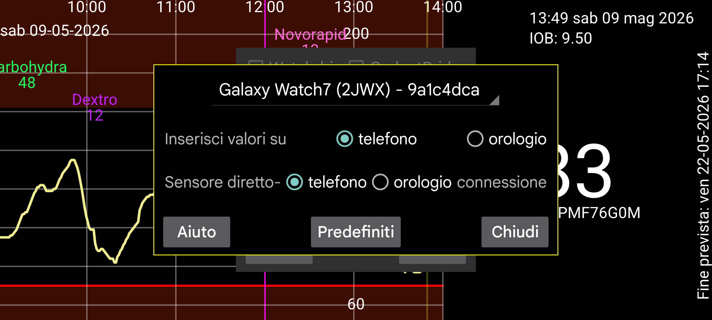

ar be de es fr hi it ja ko nl pl pt ru tr uk uz zh en
Inserisci numeri (valori) sull'orologio: Inserisci valori per Insulina, carboidrati e attività sull'orologio (secondo menu→ "Valore") invece che sul telefono. Se vuoi scansionare le Novopen con il telefono, non dovresti impostarlo. Se hai dimenticato il telefono, puoi fare lo stesso sul tuo orologio, con menu sinistro→Sensore→Switch.
Connessione diretta sensore-orologio: Questo determina se l'orologio debba essere direttamente connesso con il sensore. Questo può essere cambiato solo quando orologio e telefono sono sincronizzati. Usa Mirror->Sync e Reinit su telefono e orologio, per sincronizzare telefono e orologio. Se dimentichi di abilitare "Connessione diretta sensore-orologio" prima di uscire di casa con solo il tuo orologio, puoi premere menu sinistro → Sensore → Switch sull'orologio per connettere direttamente il sensore con l'orologio. Quando telefono e orologio sono nuovamente nel raggio Bluetooth, viene inviato un messaggio al telefono per smettere di connettersi con il sensore e invertire la direzione della connessione mirror.
Predefiniti: Reimposta le impostazioni della connessione ai loro valori predefiniti. Questo riguarda le impostazioni che possono essere cambiate in Menu sinistro->Mirror sull'orologio e menu centrale sinistro->Mirror sul telefono. È costituito da impostazioni come "Solo attivo" e "Scansioni". Premi questo pulsante se le impostazioni sono state cambiate accidentalmente — ad esempio dall'acqua della doccia o durante il sonno. Se reimposti reinstallando la versione per orologio o cancellando i dati, devi anche rimuovere la connessione mirror sul telefono.
Una versione speciale di Juggluco può funzionare direttamente su un orologio Wear OS. Ha bisogno di uno smartphone Android con NFC per scansionare il sensore e tramite una connessione TCP questi dati sono inviati all'orologio Wear OS. Successivamente ci sono due possibilità:
Il sensore rimane connesso con lo smartphone e lo smartphone invia ogni valore del glucosio che riceve via Bluetooth all'orologio Wear OS tramite TCP;
È anche possibile connettere direttamente il sensore con l'orologio Wear OS. Per questo hai bisogno di un orologio Wear OS con buona connettività Bluetooth.
Alcune immagini sono mostrate su https://www.juggluco.nl/JugglucoWearOS
Per farlo funzionare fai quanto segue:
Assicurati che sia il Bluetooth che il WIFI funzionino su orologio e telefono;
Verifica che l'orologio abbia abbastanza spazio di archiviazione libero e RAM. È possibile che Juggluco debba essere reinstallato se il dispositivo esaurisce lo spazio di archiviazione in un momento critico;
Prima fai funzionare la versione per telefono di Juggluco con il sensore. Devi scansionare il sensore alcune volte con "Usa Bluetooth" impostato;
Installa la versione Wear OS di Juggluco sul tuo orologio Wear OS e avviala;
Sul telefono, vai in menu sinistro->Orologio->Config Wear OS. Il tuo orologio dovrebbe essere mostrato nello spinner.
Se tutto è andato bene, in entrambi i Juggluco viene configurata una connessione TCP e tutti i dati sul telefono sono inviati all'orologio. Questo può richiedere molto tempo se hai usato Juggluco per molto tempo, in modo che molti dati debbano essere inviati. Puoi controllare se la connessione TCP è configurata guardando nella finestra di dialogo mirror (telefono: menu centrale sinistro->Mirror, orologio: menu sinistro->Mirror). Dovrebbe essere mostrata una connessione con lo stesso id mostrato nello spinner per il tuo orologio. Sull'orologio, dovrebbe contenere anche l'IP del telefono. Se non ci sono o il lato orologio non contiene un IP, premi nuovamente su "Init app orologio". Se ancora non c'è, controlla la connessione Bluetooth e l'app del telefono responsabile della connessione al tuo orologio. In seguito, se l'IP corretto non viene mostrato, dovresti sul telefono disattivare e riattivare la connessione esterna (WIFI o dati mobili).
Se tutto è andato bene, gli stessi dati, mostrati sulla versione per telefono di Juggluco, sono mostrati sulla versione per orologio di Juggluco. Ogni nuovo valore del glucosio ricevuto dal telefono viene inviato tramite TCP all'orologio. Anche alcune impostazioni come unità, livelli di allarme glucosio e promemoria sono trasmesse all'orologio. Le modifiche successive devono essere fatte sull'orologio stesso.
Se hai uno smartwatch con buona connettività Bluetooth e ti piace ricevere i valori del glucosio sul tuo orologio senza dover portare il telefono, puoi connettere la versione per orologio di Juggluco direttamente con il sensore. Dopo che tutti i valori sono stati inviati all'orologio, puoi selezionare "Connessione diretta sensore-orologio". Con questo, "Usa Bluetooth" viene disattivato nel telefono e attivato nell'orologio. I valori del flusso vengono ora inviati dall'orologio al telefono come puoi controllare nella finestra di dialogo Mirror. Non puoi cambiare "Connessione diretta sensore-orologio" quando orologio e telefono non sono sincronizzati.
Se il sensore ha una connessione Bluetooth diretta con l'orologio e i suoi valori sono inviati a uno smartphone, anche i valori scansionati dovrebbero essere inviati dal telefono all'orologio e i valori del flusso dovrebbero essere sincronizzati prima di scansionare il sensore con Juggluco (le impostazioni sono configurate automaticamente in questo modo). Altrimenti, vecchi valori potrebbero essere rinviati all'orologio o le informazioni di autenticazione modificate non sono inviate all'orologio, il che risulterà in errori Unlock key.
Anche le modifiche alla connessione devono essere fatte solo quando i dati sono sincronizzati; i dati su telefono e orologio dovrebbero essere copie complete (con l'eccezione che puoi tralasciare tutti i dati dei valori).
La prima volta, quando molti dati devono essere trasferiti dallo smartphone all'orologio, puoi attaccare l'orologio al caricatore: il mio orologio attiva il WIFI quando è attaccato al caricatore.
La connessione orologio-telefono è un adattamento della connessione mirror che puoi configurare tra telefoni che eseguono Juggluco e computer che eseguono Juggluco server. Quando la connessione tra telefono e orologio è generata automaticamente nel modo descritto sopra ha le seguenti aggiunte:
L'IP dell'altro lato della connessione viene determinato automaticamente. Normalmente non devi fare nulla direttamente con la connessione mirror. Invece puoi usare Menu sinistro→Orologio→Config WearOS per cambiare le impostazioni.
Se la connessione WIFI tra il telefono e l'orologio non funziona, Juggluco passa all'uso di TCP su Bluetooth. Tranne quando molti dati devono essere inviati all'orologio al primo utilizzo, puoi disattivare il WIFI sull'orologio.
Quando nessun dato viene scambiato tra Juggluco sul telefono e sull'orologio puoi controllare quanto segue:
Il Bluetooth deve essere attivato sull'orologio e sul telefono (il WIFI può essere disattivato);
L'app companion dell'orologio deve mostrare che l'orologio è connesso al telefono;
In Menu sinistro→Mirror sull'orologio e menu centrale sinistro→Mirror sul telefono dovrebbe esserci una voce di connessione creata automaticamente con l'identificatore dell'orologio (lo stesso identificatore mostrato in Menu sinistro→Orologio→"Config WearOS" sul telefono.)
Premere Reinit e/o Sync in menu sinistro→Mirror sull'orologio può aiutare;
A volte devi fare lo stesso sul telefono. In seguito potresti aver bisogno di farlo di nuovo sull'orologio;
Disattivare e riattivare il Bluetooth sul telefono o sull'orologio può aiutare. Successivamente devi nuovamente premere Reinit e Sync sull'orologio;
Fare lo stesso con WIFI o dati mobili è a volte necessario;
A volte è necessario un riavvio del telefono e/o dell'orologio per far funzionare nuovamente il Bluetooth;
È possibile che in qualche modo le impostazioni nella connessione mirror siano cambiate ai valori sbagliati. Puoi reimpostarle ai valori originali premendo menu sinistro→Orologio→"Config WearOS"→Default sul telefono. Questo ha anche l'effetto di connettere il sensore con il telefono invece che con l'orologio. I dati presenti solo sull'orologio saranno sovrascritti;
Se tutto il resto fallisce, puoi reinstallare la versione per orologio e ricominciare da capo. In tal caso devi rimuovere la connessione orologio esistente in Menu centrale sinistro→Mirror.
Se i dati mancano sul telefono ma sono presenti sull'orologio, il recupero è più difficile. In qualche modo devi prima creare una connessione mirror funzionante per ricevere i dati sul telefono.
Juggluco per Wear OS include una watchface che visualizza il livello attuale del glucosio insieme all'ora e fino a quattro complicazioni. Per usarla, dovrai selezionare questa watchface in, ad esempio, l'app companion del tuo orologio sotto "scaricate". Normalmente, vedrai l'ultimo valore del glucosio quando lo schermo si attiva. Quando lo schermo è in modalità ambient (sempre attivo), il valore del glucosio viene aggiornato solo quando l'indicatore dei minuti cambia, o quando premi un pulsante o alzi il braccio. Quindi il valore visualizzato può essere ritardato fino a un minuto. La watchface non può essere utilizzata su alcuni orologi più recenti (ad esempio Samsung Galaxy Watch 7 e Watch Ultra) poiché non consentono watchface programmate nello sforzo di preservare la durata della batteria.
Juggluco 8.2.0 e successivi contiene una complicazione valore del glucosio, freccia del glucosio e freccia+valore che può essere usata anche con WearOS 5. Questa può essere usata con ogni watchface che accetta uno slot di complicazione immagine piccola o grande, ad esempio Time and Track o Watchface for Juggluco. Puoi anche creare la tua watchface con Watch Face Studio.
Una terza opzione è attivare Glucosio Flottante nelle impostazioni di Juggluco sull'orologio. Quando Juggluco ha i giusti permessi, un valore del glucosio viene visualizzato sopra altre app. In questo modo puoi vedere il valore corrente del glucosio mentre usi watchface o app arbitrarie che monitorano la tua attività. Per maggiori informazioni vedi, nella versione per telefono di Juggluco, menu sinistro -> Impostazione -> Glucosio flottante -> Aiuto.
Dall'app companion puoi nuovamente inviare ad altri dispositivi tramite internet come descritto in Menu centrale sinistro→Mirror. È anche possibile connettere l'orologio direttamente a un server su internet e da quello a un telefono follower come descritto su: https://www.juggluco.nl/Juggluco/cmdline/watch